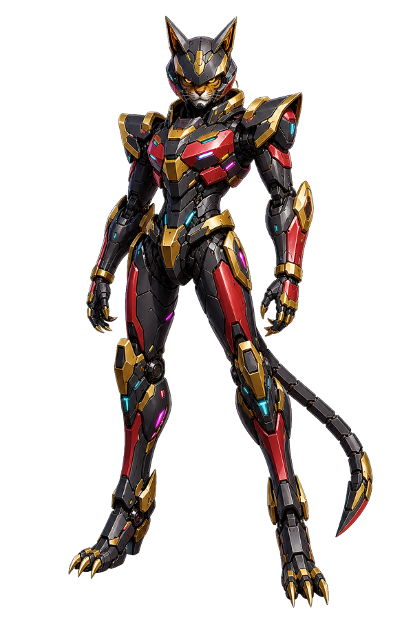
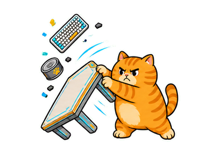

OpenAI Build Week 2026 - Developer Tools
Codex Dream Skin Workflow Engine
A reversible workflow for turning Codex-assisted visual briefs into safe, modular, verified desktop themes.
macOS
Local CDP
No app patching
Restore-ready

Safe Personalization
From rigid native UI to a readable themed cockpit
Native baseline
Before
Environment
Local
main
Dream Skin module
After
Environment
Local
main
Workflow Engine
One product, separate modules, bounded runtime
1. BriefCapture visual direction, safe areas, asset roles, and interaction behavior.
2. SpecNormalize palette, modules, assets, activation policy, and runtime budgets.
3. AssetGenerate, cut out, resize, compress, and keep source/runtime ownership separate.
4. GateRun tests, module matrix, byte budgets, and selector regression checks.
5. ApplyTransfer only changed payload groups through local CDP and one-shot injection.
6. VerifyCheck readability, geometry, panel retreat, clickable controls, and restore state.
7. InstallSync the managed engine, launcher, hashes, and public instructions.
8. RestoreRemove injected DOM and classes without modifying the official application.
Subtractive Runtime
Glass look without heavy idle effects
0
theme backdrop blur at runtime
0
idle theme animations
3
remaining lightweight theme shadows
1x
one-shot launcher apply policy
Manual interaction
The table-flip sprite loads only after the trigger is clicked, then releases its playback node.

Judge path
Install, apply once, verify the renderer, then restore the native interface without touching the official app bundle.
bash macos/tests/run-tests.sh
bash macos/scripts/install.sh
bash macos/scripts/start.sh --no-launch --once --port 9341 --wait-ms 8000
bash macos/scripts/verify.sh --port 9341
bash macos/scripts/restore.sh --port 9341
bash macos/scripts/install.sh
bash macos/scripts/start.sh --no-launch --once --port 9341 --wait-ms 8000
bash macos/scripts/verify.sh --port 9341
bash macos/scripts/restore.sh --port 9341
Codex + GPT-5.6 Build Loop
Design, implement, verify, restore, and package as one repeatable developer workflow
Structured theme spec
Image2 asset variants
Collision retreat
Low-frequency maintenance
Content-hash reuse
Public provenance